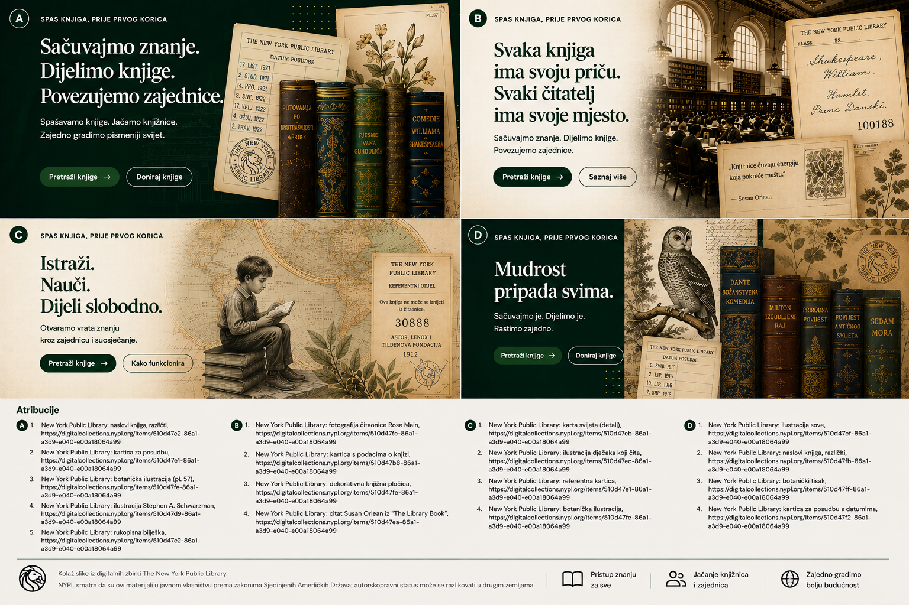

Institucionalni primjeri na ovoj stranici služe samo kao konceptualni prikaz toka rada i ne podrazumijevaju postojeća partnerstva ili implementacije.
Vodič za institucije
Pregledajte ponude knjiga s dovoljno strukture za stvarne odluke.
Let Books je osmišljen za knjižnicama prijateljske procese, ali i za škole, sveučilišta, arhive i udruge koje trebaju praktičan pregled i koordinaciju preuzimanja.

Kad je ovaj vodič za vas
- Pregledavate knjige koje donatori nude.
- Treba vam strukturirani odabir umjesto neformalne e-pošte.
- Odluke želite vezati uz stabilne identifikatore.
- Važni su vam izvor podataka, stanje i izvedivost preuzimanja.
Tko sve može biti institucija
- Javne i akademske knjižnice
- Škole i sveučilišta
- Arhivi i specijalizirane zbirke
- Udruge i druge partnerske organizacije
Osnovni proces pregleda
MVP proces je namjerno jednostavan jer će mnoge institucije prije prihvatiti preglednicu nego novi portal.
Primite izvoz
Otvorite popis sa stabilnim ID-jevima i čitljivim metapodacima.
Označite odluke
Birate želi, možda ili ne želi i po potrebi dodajete komentar.
Vratite datoteku
Koristite poznati tijek rada bez obveznog novog računa.
Uvezite odluke
Donator vraća vaše odluke bez nejasnog povezivanja po naslovu.
Stvorite popis preuzimanja
Traženi primjerci grupirani su po stvarnim lokacijama.
Dogovorite primopredaju
Preuzimanje i dostava ostaju izvan platforme dok buduće funkcije to izričito ne prošire.
Zašto je važan izvor podataka
Institucije trebaju znati dolazi li podatak od čovjeka, iz OCR-a, vanjskog kataloga ili uvoza. Povjerenje i status pregleda moraju biti vidljivi.
Fizička logistika i dalje odlučuje
Traženi primjerak koristan je tek kad ga netko može pronaći. Popis preuzimanja po sobi, polici i kutiji to čini izvedivim.
Primjer: Gradska knjižnica, sveučilišni odjel i lokalni arhiv pregledaju jedan izvoz privatnog donatora i svaki odabire različite primjerke prema stanju i sadržajnoj prikladnosti.